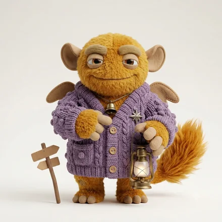
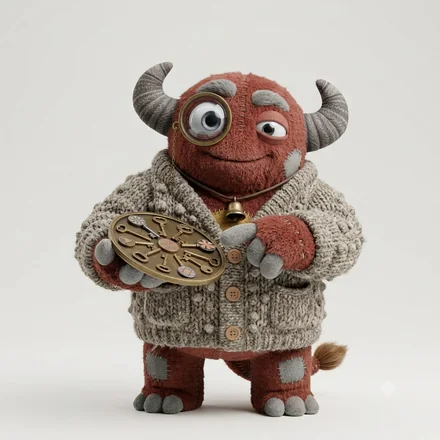

compatibility
ISTJ-A-H の相性
ISTJ-A-H（頼れる几帳面モンスター）と、恋人・仕事のパートナー・友人。用途ごとに効く軸が違うので、順位も変わります。6軸の重みづけから計算した目安であって、測定値ではありません。
恋人としてかみ合う相手
生活を共にする相手として、64タイプを並べたときの上位6です。
この用途では「外界への構えが同じ」と「判断の基準が同じ」ことを最も重く見ています。
 ISTJ-O-H念を入れる几帳面モンスター
ISTJ-O-H念を入れる几帳面モンスター
追い風外界への構え、判断の基準
向かい風—
予定や家事の進め方が揃い、暮らしの摩擦が少ない
ISTJ-A-H × ISTJ-O-H の内訳を見る INTJ-O-H問い直す設計モンスター
INTJ-O-H問い直す設計モンスター
追い風外界への構え、判断の基準
向かい風情報の受け取り方
予定や家事の進め方が揃い、暮らしの摩擦が少ない
ISTJ-A-H × INTJ-O-H の内訳を見る ESTJ-O-H根回しする仕切りモンスター
ESTJ-O-H根回しする仕切りモンスター
追い風外界への構え、判断の基準
向かい風エネルギーの向き
予定や家事の進め方が揃い、暮らしの摩擦が少ない
ISTJ-A-H × ESTJ-O-H の内訳を見る ISTJ-A-H頼れる几帳面モンスター
ISTJ-A-H頼れる几帳面モンスター
追い風外界への構え、判断の基準
向かい風自分への確信
予定や家事の進め方が揃い、暮らしの摩擦が少ない
ISTJ-A-H × ISTJ-A-H の内訳を見る ISFJ-O-H気に病むお世話モンスター
ISFJ-O-H気に病むお世話モンスター
追い風外界への構え、人への構え
向かい風判断の基準
予定や家事の進め方が揃い、暮らしの摩擦が少ない
ISTJ-A-H × ISFJ-O-H の内訳を見る ISTJ-O-C石橋を叩く几帳面モンスター
ISTJ-O-C石橋を叩く几帳面モンスター
追い風外界への構え、判断の基準
向かい風人への構え
予定や家事の進め方が揃い、暮らしの摩擦が少ない
ISTJ-A-H × ISTJ-O-C の内訳を見る仕事のパートナーとして組みやすい相手
組んで成果を出す相手として、64タイプを並べたときの上位6です。
この用途では「情報の受け取り方が違う」と「外界への構えが同じ」ことを最も重く見ています。

ENFJ-O-H気を配りすぎる伴走モンスター追い風外界への構え、人への構え
向かい風判断の基準
予定や家事の進め方が揃い、暮らしの摩擦が少ない
ISTJ-A-H × ENFJ-O-H の内訳を見る INFJ-O-H揺れながら寄り添う洞察モンスター
INFJ-O-H揺れながら寄り添う洞察モンスター
追い風外界への構え、人への構え
向かい風判断の基準
予定や家事の進め方が揃い、暮らしの摩擦が少ない
ISTJ-A-H × INFJ-O-H の内訳を見る
ENTJ-O-H聞いてから決める推進モンスター追い風外界への構え、判断の基準
向かい風エネルギーの向き
予定や家事の進め方が揃い、暮らしの摩擦が少ない
ISTJ-A-H × ENTJ-O-H の内訳を見る ENFJ-O-C静かに支える伴走モンスター
ENFJ-O-C静かに支える伴走モンスター
追い風外界への構え、自分への確信
向かい風判断の基準
予定や家事の進め方が揃い、暮らしの摩擦が少ない
ISTJ-A-H × ENFJ-O-C の内訳を見る
INTJ-O-H問い直す設計モンスター
追い風外界への構え、判断の基準
向かい風情報の受け取り方
予定や家事の進め方が揃い、暮らしの摩擦が少ない
ISTJ-A-H × INTJ-O-H の内訳を見る ESFJ-O-H気を回しすぎるおもてなしモンスター
ESFJ-O-H気を回しすぎるおもてなしモンスター
追い風外界への構え、人への構え
向かい風判断の基準
予定や家事の進め方が揃い、暮らしの摩擦が少ない
ISTJ-A-H × ESFJ-O-H の内訳を見る友人として続きやすい相手
長く付き合う相手として、64タイプを並べたときの上位6です。
この用途では「情報の受け取り方が同じ」と「エネルギーの向きが同じ」ことを最も重く見ています。
ISFJ-O-H気に病むお世話モンスター
追い風外界への構え、人への構え
向かい風判断の基準
予定や家事の進め方が揃い、暮らしの摩擦が少ない
ISTJ-A-H × ISFJ-O-H の内訳を見る
ISTJ-O-H念を入れる几帳面モンスター
追い風外界への構え、判断の基準
向かい風—
予定や家事の進め方が揃い、暮らしの摩擦が少ない
ISTJ-A-H × ISTJ-O-H の内訳を見る ISFJ-A-H迷わず手を貸すお世話モンスター
ISFJ-A-H迷わず手を貸すお世話モンスター
追い風外界への構え、人への構え
向かい風判断の基準
予定や家事の進め方が揃い、暮らしの摩擦が少ない
ISTJ-A-H × ISFJ-A-H の内訳を見る ISFP-O-H揺れる感性モンスター
ISFP-O-H揺れる感性モンスター
追い風人への構え、エネルギーの向き
向かい風外界への構え
人との距離の詰め方が同じで、交友や親族づきあいで揉めにくい
ISTJ-A-H × ISFP-O-H の内訳を見る
ISTJ-A-H頼れる几帳面モンスター
追い風外界への構え、判断の基準
向かい風自分への確信
予定や家事の進め方が揃い、暮らしの摩擦が少ない
ISTJ-A-H × ISTJ-A-H の内訳を見る ISFJ-O-C内に抱えるお世話モンスター
ISFJ-O-C内に抱えるお世話モンスター
追い風外界への構え、エネルギーの向き
向かい風判断の基準
予定や家事の進め方が揃い、暮らしの摩擦が少ない
ISTJ-A-H × ISFJ-O-C の内訳を見る全64タイプとの相性
上の3つは用途ごとの上位だけです。順位の下のほうまで含めた全体は、こちらで開けます。
全64タイプとの相性を一覧で見る
数値は6軸の重みづけから計算した目安で、測定値ではありません。順位は64タイプ中のものです。同じタイプ同士も相手として数えています。
同じ ISTJ の他の3タイプの相性
自分への確信（A / O）と人への構え（H / C）が変わると、順位も変わります。

よくある質問
ISTJ-A-Hと最も相性がいいのはどのタイプですか？
用途によって変わります。恋人として噛み合うのはISTJ-O-H、INTJ-O-H、ESTJ-O-H、仕事のパートナーとしてはENFJ-O-H、INFJ-O-H、ENTJ-O-H、友人としてはISFJ-O-H、ISTJ-O-H、ISFJ-A-Hが上位です。ひとつの答えにならないのは、同じ相手でも用途ごとに効く軸が違うからです。
相性のスコアは何を根拠にしていますか？
測定値ではありません。6つの軸それぞれについて「一致が効くか、違いが効くか」を用途別に重みづけし、追い風になっている軸の重みが全体の何割かを出しています。設計した重みなので、数値だけでなく必ずどの軸が効いたかと一緒に見てください。重みの中身は各カードの「追い風」「向かい風」で開いています。
ISTJ-A-H同士の相性はどうですか？
ISTJ-A-H同士も相手として数えていて、恋人4位・仕事45位・友人5位です。6つの軸がすべて同じになるので、一致が効く用途では上位に来て、違いが効く用途では下がります。同じタイプだから相性がいい、とも悪いとも決めていません。
相性の悪いタイプはいますか？
順位の下のほうに来るタイプはありますが、悪いという扱いはしていません。噛み合いにくい相手は、価値観の置き所が違うぶん、自分に足りない視点を最も速く手渡してくれる相手でもあります。全64タイプの順位は一覧で開けます。
相性の数値は、6軸の重みづけから計算した目安です。人の関係は、タイプだけで決まるものではありません。
© 2026 WONDER BROTHERS INC. All rights reserved.